03 / Documaster · Records Management
Records management,
built from zero.
Documents were everywhere. Finding them depended on memory, not system. I was the first designer on this product — from interaction model to the component library that served two separate products.
Platform
Records management & archiving SaaS
Scope
0→1 SaaS + design system
My Role
Product Designer · sole designer
Pilots
Stokke · Knutsen OAS Shipping
01 / Context
Large organisations in regulated industries share a common problem: documents exist everywhere and belong nowhere. Email threads, local drives, shared folders — all accumulating in parallel, organised by whoever created the file, classified by convention rather than logic.
We tried the obvious fix first — limiting nesting to three levels. It failed validation with both pilot clients. Engineers at Knutsen still couldn't find the right version of a drawing. Contracts managers at Stokke still depended on knowing where someone had decided to file things months ago. The folder structure wasn't the implementation problem. It was the wrong model entirely.
Discovery with Stokke and Knutsen surfaced three separate problems. Documents were being missed — notifications lived outside the system, in email and Slack. Access was assumed, not stated — people shared files informally and permissions were set after the fact, if at all. And versioning was manual — when multiple people worked on the same documentation, finding the current approved version required institutional memory, not system logic.
Before
Users needed to know exact folder paths to find documents. The same file existed in multiple places. Access was assumed, not stated. Retrieval depended on institutional memory.
After
Users search by meaning, not location. Documents are classified on ingestion. Access is assigned at the moment of approval. Trusted documents are findable in under 30 seconds.
02 / My Role
I had been at Documaster for about a year, working on the Noark public sector platform, when the decision was made to build a new private sector SaaS product. I became the first and only designer on it from day one.
The team operated as a product trio: Product Owner, Engineering Lead, and me. I owned the product definition, interaction model, core workflows, access control design, and the Figma component library — built using atomic design principles to serve both the Noark platform and the new SaaS product from a single shared foundation.
02b / Design System
The component library started in Figma — atomic structure, shared tokens, built to serve both Documaster products from a single foundation. As the team grew, we translated it into a living Storybook system. 40+ components. Two products. One source of truth.
03 / Process
The first instinct — build a better folder structure — failed every success criterion we set. We needed users to find the right document in under 30 seconds. We needed classification to be consistent and reusable across teams with very different data. We explored restricted folder trees, hybrid tagging approaches, category-based hierarchies. None of them solved the underlying problem: users couldn't agree on how to classify things upfront, and no folder system could compensate for that inconsistency at scale.
Core design challenge
How can organisations classify, find, and reuse documents without relying on deep folder hierarchies — while still respecting sensitivity, access, and trust?
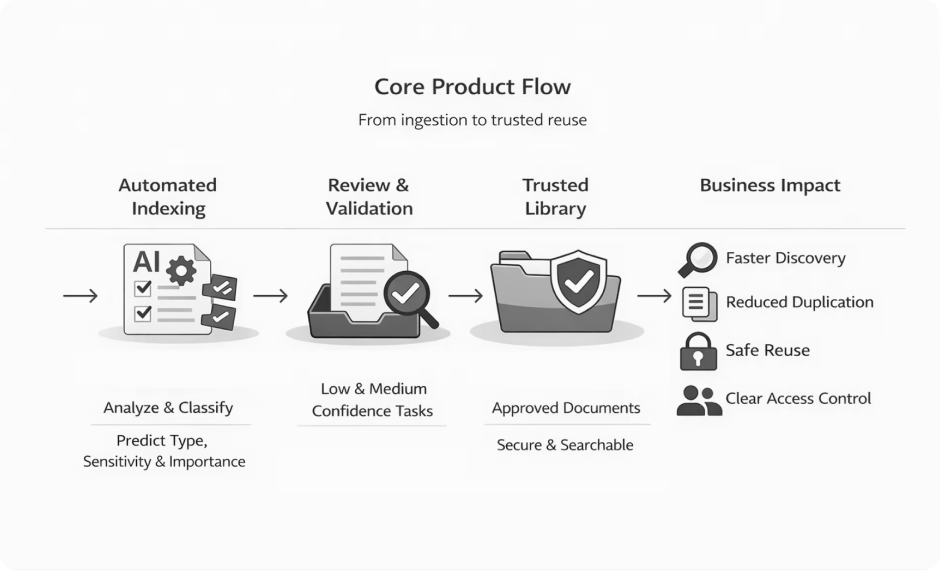
Core product flow. Documents enter, get classified, move to Inbox for human review or directly to Records if confidence is high enough. Retrieval replaces the folder hierarchy entirely.
The shift that unlocked everything was reframing the problem. This wasn't a storage problem. It was a retrieval and trust problem. If users could find documents by meaning rather than location, and trust that what they found was the correct, approved version — the folder structure became irrelevant.
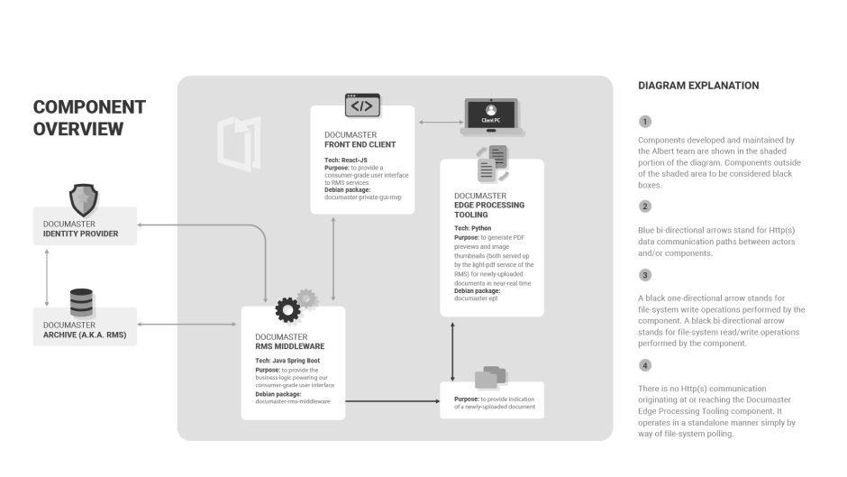
System architecture. The Edge Processing component — a standalone Python service handling PDF previews via filesystem polling — explained why document preview for Knutsen's large binary files was a genuine technical constraint.
This was the most consequential call in the project. Engineering's first proposal was to surface the ML confidence score as a percentage — technically accurate, but meaningless in practice. A document at 73% versus 81% confidence tells a contracts manager or compliance officer nothing actionable.
Rejected
Surface the raw percentage
Transparent, accurate, technically honest. In practice: a number users couldn't act on.
Chosen
Three-level confidence model
High-confidence → Records directly. Medium and low → Inbox for human review, correction, approval. Users see signal, not noise. They act — the system learns.
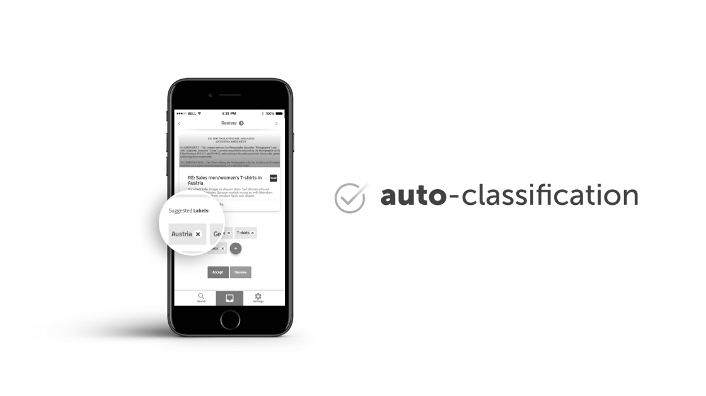
Auto-classification in action · WebIT 2018 presentation · based on shipped product
Access control followed a similar logic. Discovery made clear this was one of the biggest user pain points: documents were shared informally, permissions were assumed rather than stated. I designed access control into the classification flow itself — not as a separate admin function. Assigning access by team or individual happens at the moment a document enters the system, because that is when the question is most relevant.
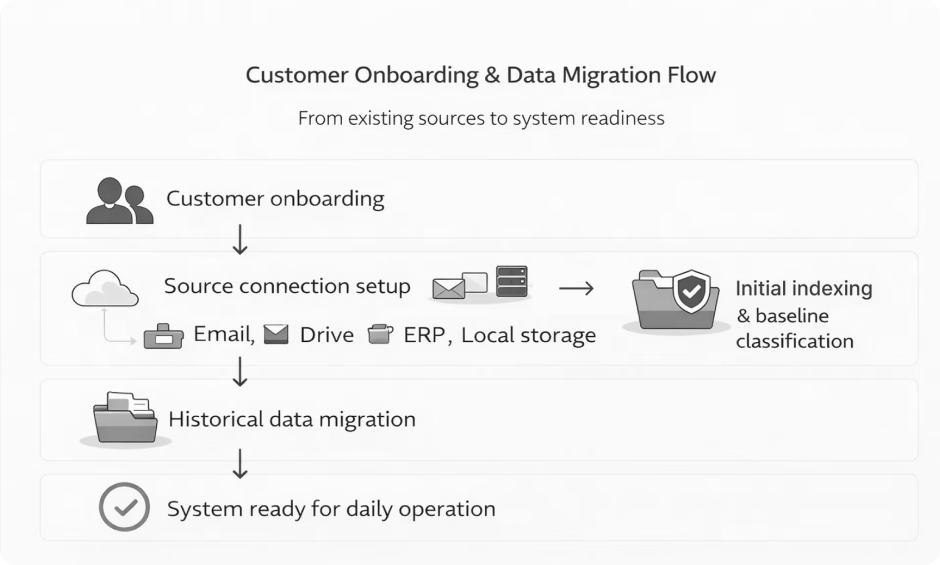
Access control surfaced at classification time — not as a separate admin panel. Permissions assigned when the document enters the system.
04 / Show the Work
Documents appear here because the system isn't certain enough to act alone. Confidence level drives prioritisation, not arrival time. Users review classification, adjust tags, set access permissions — then approve or reclassify.
Mobile-first was deliberate. Sales people at Stokke reviewed and approved documents on the move. The Inbox had to work in a pocket, not only on a desktop.
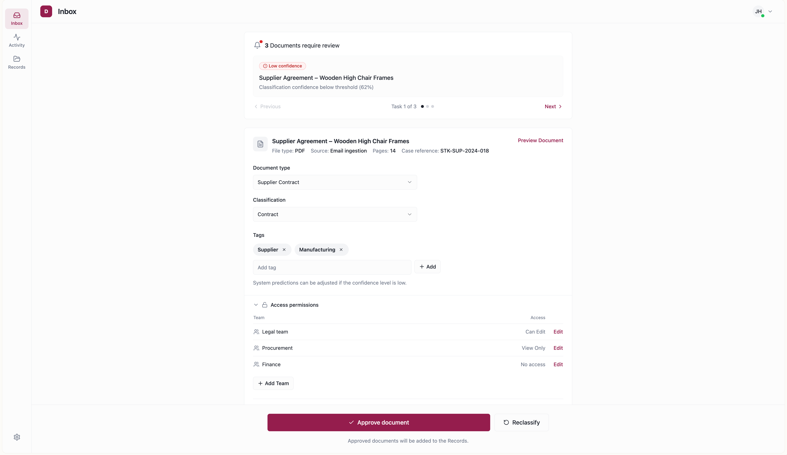
Inbox · confidence model in action. Classification, tags, and access permissions editable before approval.
InboxNo folders. Only approved, trusted documents. Faceted filters reflect business context — document type, business domain, owner, time range — not system metadata. The goal: under 30 seconds to the right document, without knowing where it was stored.
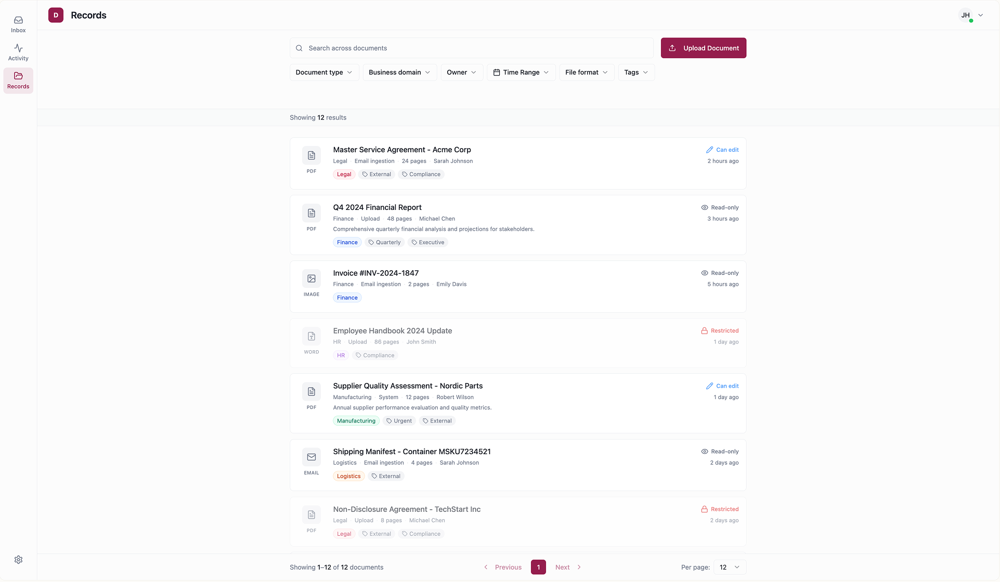
Records · flat library, faceted retrieval. No folders — search by meaning, not location.
Records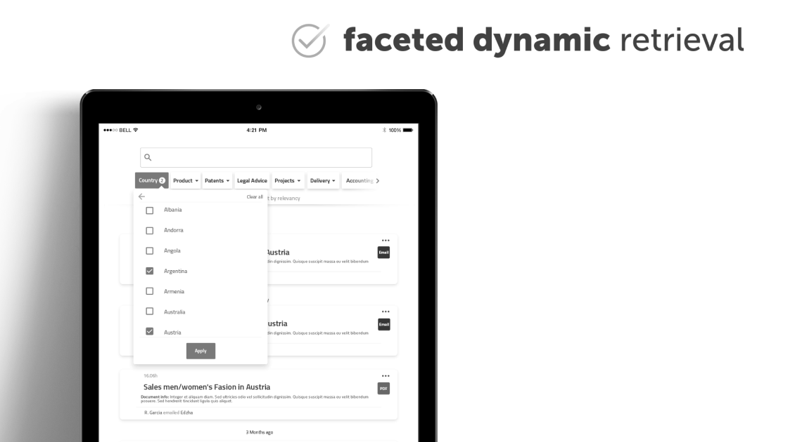
Faceted dynamic retrieval · tablet · 2018
The metadata screen was one of the most iterated surfaces. Classification, file type, who has access, activity log — all in one place. Iterations moved from a dense information layout toward a cleaner hierarchy: critical information first, editing inline, access management surfaced rather than buried.
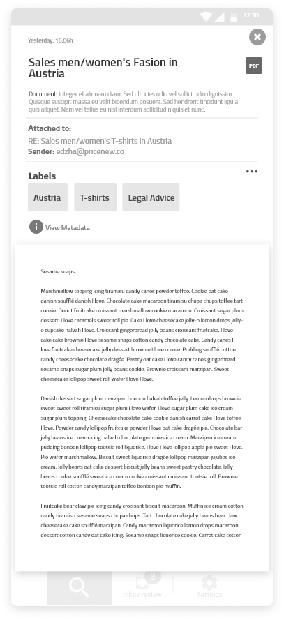
Iteration 1 · denser layout
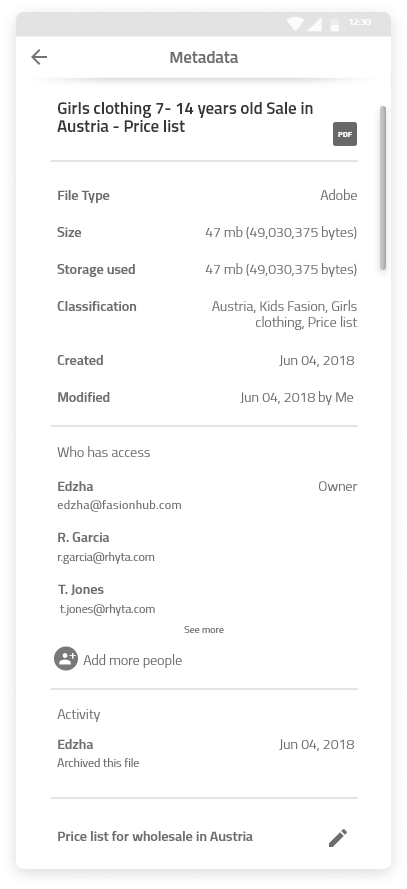
Iteration 2 · cleaner hierarchy
Documents don't exist in isolation. The Activity view gives users a chronological history of events and documents together. System items — archived contracts, signed agreements — are interleaved with user-added business events. This served four overlapping needs: project audit trail, team visibility, compliance and e-discovery, and human context the system can't capture automatically.
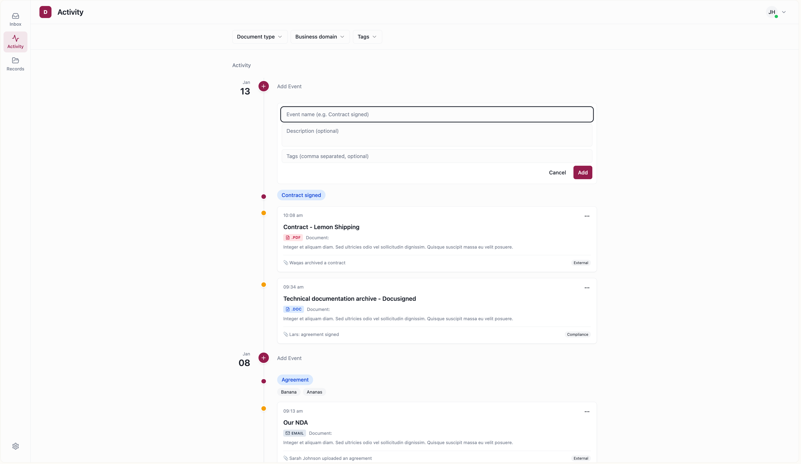
Activity · audit trail + business context. System events and user-added entries interleaved chronologically.
Activity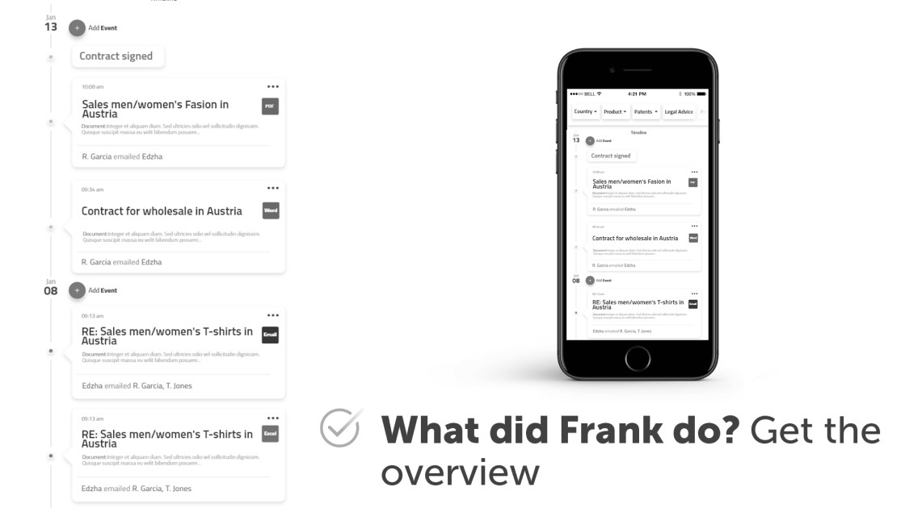
Activity · original product screens · WebIT 2018 presentation
Documents are indexed automatically as they arrive — from email, drive, ERP, local storage. The user's only signal is the Inbox badge count. No interruption, no manual filing step.
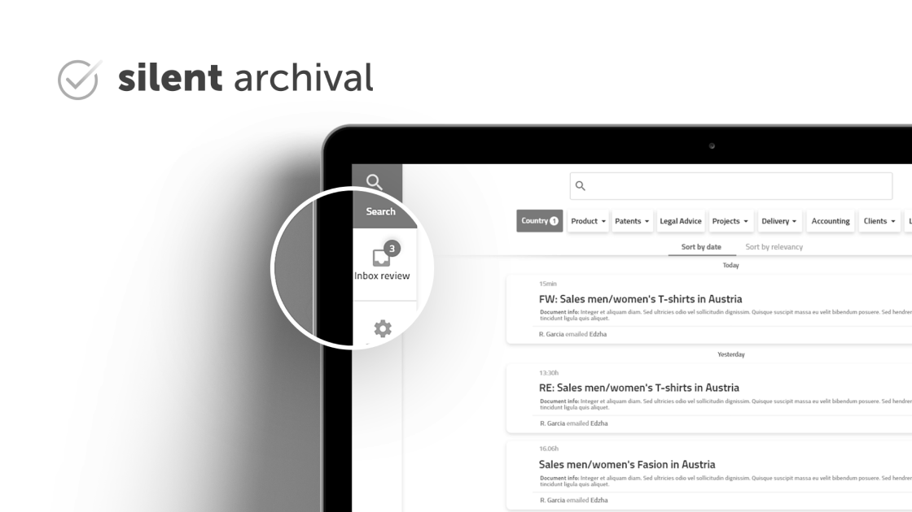
Silent archival · Inbox badge · original product screen · 2018
The add-in brought retrieval directly into Microsoft Word. Highlight text, right-click, search Documaster — related approved documents surface in a sidebar without leaving the document.
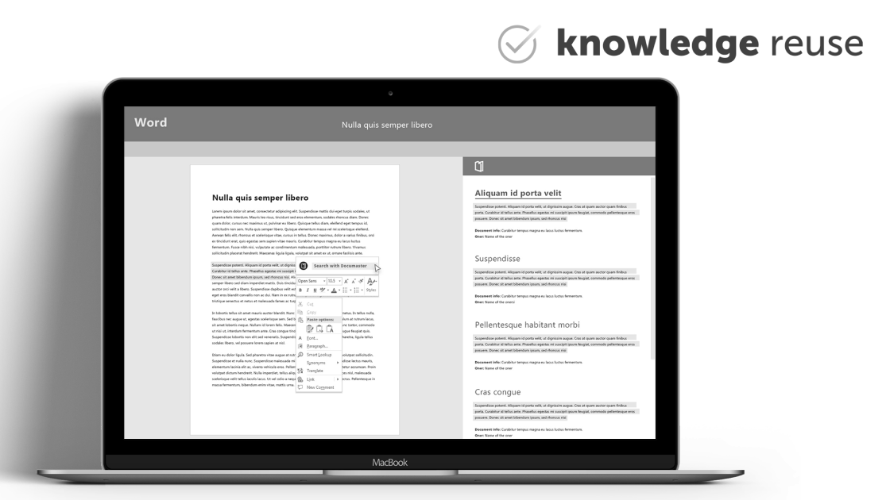
Word add-in · "Search with Documaster" · 2018
A note on these screens
The screens in this section are from a conference presentation prepared for WebIT 2018, based on the shipped product. Visual polish was updated for a new client audience — the interaction decisions are the same.
05 / Collaboration
The product trio model meant design, product, and engineering were in constant contact. Decisions moved fast because the people who needed to agree were always in the room.
The confidence level conversation is the clearest example. Engineering came with a technically sound proposal — show the percentage, be transparent about the system's certainty. I came with the user perspective: what does a percentage actually mean to someone whose job is document management, not machine learning? The Product Owner held the business frame: users needed to trust the system enough to act without reviewing everything manually. The three-level model emerged from that triangulation — not from any single discipline.
This pattern repeated throughout the project. Engineering would surface how the backend logic worked — precise, accurate, internally consistent. My job was consistently to translate that into something a user could act on without needing to understand the system behind it. Not hiding complexity, but absorbing it so users didn't have to.
06 / Outcome
The product launched as a pilot with Stokke and Knutsen OAS Shipping. Two industries, two very different data profiles — Stokke's text-heavy contracts and Knutsen's large binary engineering files. The system handled both. That cross-industry validation confirmed the classification model was robust, not just tuned for one context.
−28%
Reduction in task completion time vs. folder-based navigation. Confirmed across both pilots — Stokke's text contracts and Knutsen's binary CAD files.
Measured against folder-based navigation baselines established during discovery — timed task completion with the same document retrieval scenarios.
2
Enterprise pilot clients across different industries — commercial contracts and heavy technical documentation.
2×
Products served by one shared component library — Noark public sector platform and the new private sector SaaS.
View the interactive prototype
Rebuilt in Lovable — core flows: document ingestion, classification, Inbox review, and Records retrieval.
Prototype · not the original product · core interaction decisions preserved
01 /
Engineering accuracy ≠ user clarity.
The confidence percentage was technically honest. It was not usable. The design challenge was absorbing system complexity so users got what they needed to act — not everything the system knew. I now name this tension explicitly at the start of any project involving ML or automated systems.
02 /
Two clients stress-tested what one couldn't.
Stokke's contracts were semantically consistent — classification was reliable. Knutsen's engineering drawings were a different problem: large binary files, less textual content for the ML to index. Designing for both without splitting into two products forced decisions that turned out to be the right ones.
03 /
What I'd do differently.
Push harder earlier for access to pilot users. Most assumptions were right — but edge cases around Knutsen's technical files surfaced late. Earlier access would have changed decisions around confidence thresholds and document preview handling.
Next project
Building this portfolio →